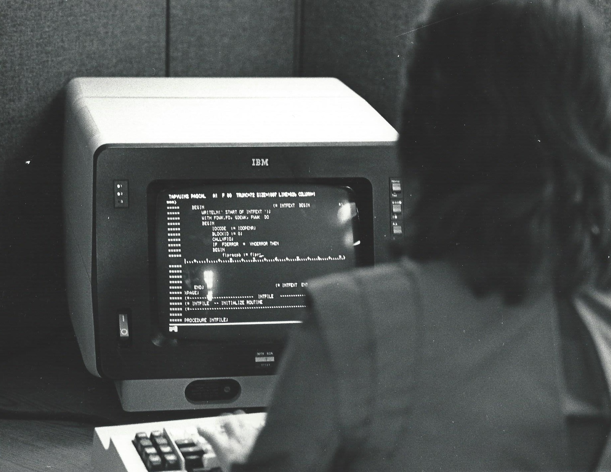

Escena 1 · El programa tradicional
Escribir código a mano
En el trabajo tradicional, la persona definía los pasos, escribía el código y consultaba documentación para resolver dudas. Con el tiempo, los editores incorporaron ayudas como autocompletar código y mostrar información mientras se escribe.
Los asistentes generativos actuales añaden otra forma de ayuda: permiten describir una tarea con palabras y recibir propuestas de código o explicaciones. Cada cambio todavía requiere revisión y pruebas.
